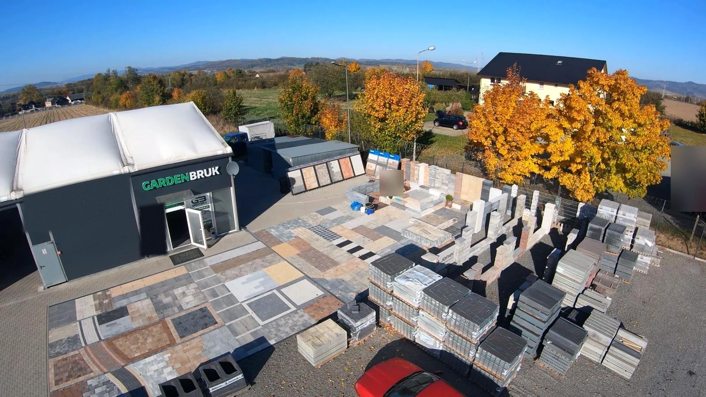
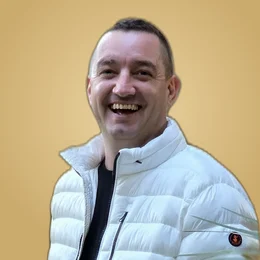
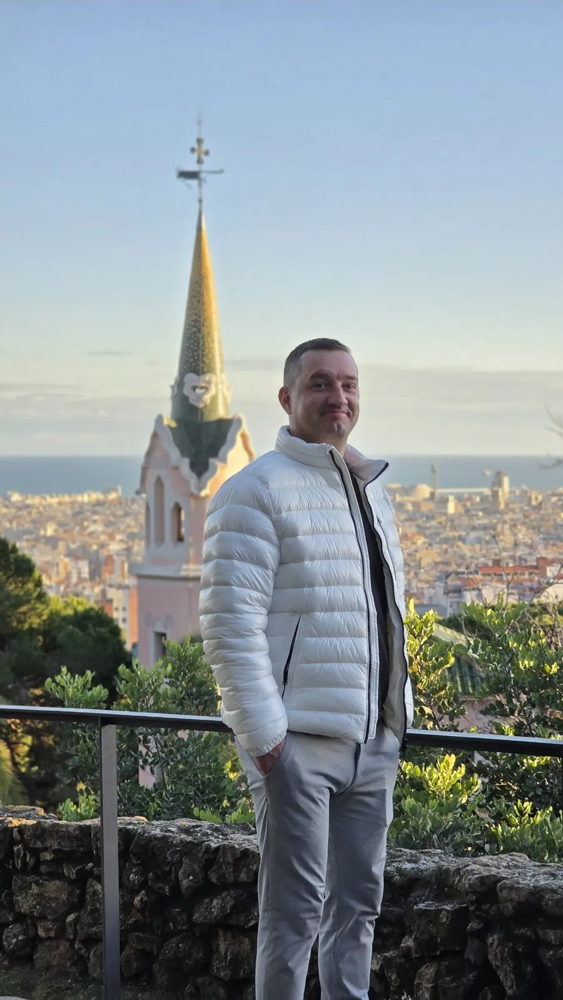
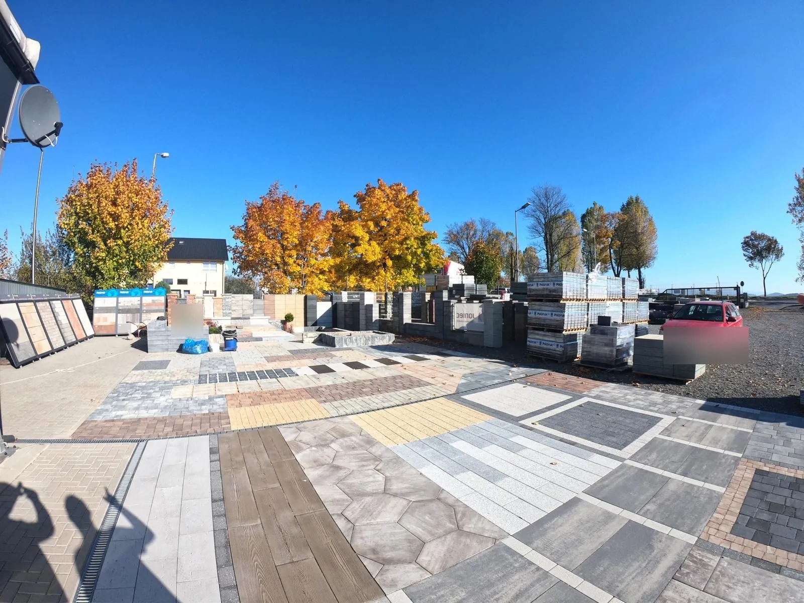

Kamień
po kamieniu.
Kostka, płyty i ogrodzenia na placu z ekspozycją pod Kłodzkiem. Przyjedź, dotknij, wybierz. Pomiar robimy u Ciebie.
Od zera.
Andrzej ciężko pracuje, odkąd skończył szesnaście lat.
Nikt mu nic nie dał.
Z każdej trudności wyszedł sam. I za każdym razem szedł dalej.
Dla kogo?
Dla siebie. Dla swojej córki. Dla każdego, kto mu zaufał.
Kamień po kamieniu.
Tak powstaje podjazd. Tak powstało GardenBruk.

5 · GotoweDziś ma swój plac.
W Mikowicach pod Kłodzkiem. Każdy problem rozwiąże. Na każde pytanie znajdzie czas.
OfertaCo znajdziesz na placu.
Dotknij, co Cię interesuje, i załaduj na wózek. Andrzej załaduje paletę na auto, a Ty wyślesz zamówienie WhatsAppem albo e-mailem.
Załaduj wózekZamów u Andrzeja. Prosto z placu.
Wybierz kostkę, płyty albo ogrodzenie od producentów Polbruk i Joniec, ustaw kolor i ilość, a potem załaduj paletę na wózek. Andrzej załaduje ją na auto, a Twoje zamówienie trafi do niego WhatsAppem albo e-mailem. Cenę, dostępność i termin ustalicie bezpośrednio.
1Skąd towar?Wybierz producenta
2Wybierz produktDotknij zdjęcia
3Kolor, grubość i ilośćIlość możesz zostawić pustą, ustalicie ją razem
Nazwy linii i kolorów według katalogów producentów. Nie każdy kolor i grubość występuje w każdej linii, dostępność ustalicie przy zamówieniu. Nie widzisz swojego produktu? Dopisz go w uwagach.
ProjektantTwój ogród. Twoja kostka.
Zrób zdjęcie podwórka. Palcem narysuj podjazd, ścieżkę i taras, każdemu daj inną kostkę. Posadź drzewa, postaw lampy i zobacz wszystko wieczorem i w nocy. Zdjęcie zostaje na Twoim urządzeniu.
Stań na skraju podwórka i zrób zdjęcie tak, żeby cały teren był w kadrze. Na komputerze możesz też przeciągnąć zdjęcie na podgląd.
Albo wypróbuj na naszych realizacjach:
Przeciągnij 4 żółte punkty na rogi prostokąta na ziemi, np. podjazdu albo tarasu, i wpisz jego wymiary. Dzięki temu kostka i rośliny mają prawdziwą wielkość. Siatka pokazuje metry.
Dwoma palcami przybliżysz zdjęcie. Lupa pokazuje, co jest pod palcem.
Wzór
Kolor
Obrzeże
Ułóż za mnie
Jeden dotyk: kostka, obrzeże, rośliny i światło ułożą się na Twoich obszarach. Potem zmienisz wszystko po swojemu.
Pora dnia
Coś stoi na kostce? (auto, donica)
To wizualizacja. Dokładny projekt i ilości ustalamy przy pomiarze u Ciebie.
WzoryWybierz wzór. Plac pod Tobą ułoży się na nowo.
Jodełka: najmocniejszy układ na podjazd. Każdy wzór układamy pod Kłodzkiem.
Ten sam wzór w innych kolorach
RealizacjeUłożone przez nas.
Podjazdy, ścieżki i wzory z kostki na Ziemi Kłodzkiej. Dotknij zdjęcia, żeby je powiększyć. Podoba Ci się? Jednym dotknięciem dodasz „Chcę podobnie” do wózka, a Andrzej od razu wie, o co chodzi.

O nasAndrzej. Na placu i u Ciebie.
Centrum Architektury Ogrodowej GardenBruk to Andrzej i jego plac w Mikowicach. Przyjedzie, zmierzy, doradzi i dopilnuje, żeby każdy kamień leżał jak trzeba. Kamień dobieramy do domu, a nie odwrotnie.
„Polecam. Najlepsza jakość obsługi.”
Aleksander J. · Facebook
„Gwarantują profesjonalne doradztwo i szeroki wybór.”
Ania O.-G. · Facebook
Opinie w Google ↗ Masz już za sobą wizytę u Andrzeja? Zostaw kilka słów – pomagasz innym w wyborze.

ProducenciPrawdziwe marki. Na żywo.
Na placu stoją kostka, płyty i ogrodzenia marek Polbruk i Joniec, ułożone na ekspozycji. Zobaczysz kolor w słońcu i w cieniu, zanim zamówisz.
Nie ma Twojego wzoru na placu? Zapytaj, sprowadzimy go.
Strefa gierCztery gry z kostki.
Ułóż brakujący kawałek drogi, rozpoznaj wzory na czas, znajdź pary kostek albo zagraj w Kostris. Rekordy zapisują się na Twoim urządzeniu.
Wyślij swoje rekordy i sprawdź, kto pobije Twoje wyniki.
Co Andrzej układa?
Co Andrzej układa?
Andrzej układa obrazek z kostki, kamień po kamieniu. Zgadnij, co to będzie – im mniej kostek leży, tym więcej punktów.
złota kostka: dotknij, +50 pktkawa: 3 s przerwy½pół na pół
8 obrazków i zlecenie specjalne. Rekord: brak
Kostris
Układamy kostkę od lat. Twoje plany składamy tak łatwo, jak klocki w tej grze.
Kolory w grze
Pauza
Plansza czeka na Ciebie. Kostka nie spadnie, dopóki nie wrócisz.Koniec gry
← → przesuwają, ↑ obraca, ↓ przyspiesza, spacja zrzuca, P pauza.
Bonusy: złota kostka w ułożonym rzędzie, kilka rzędów naraz i seria rzędów jeden po drugim.
Jak pracujemyOd pomiaru po ostatni kamień.
- Telefon albo WhatsAppOpowiedz, co planujesz. Zdjęcie podwórka bardzo pomaga.
- Pomiar u CiebiePrzyjeżdżamy, mierzymy i doradzamy na miejscu.
- Wybór na placuKamień oglądasz na żywo, nie tylko w katalogu.
- Materiał i sprzętWszystko w jednym miejscu, zagęszczarkę możesz wypożyczyć.
Umów pomiar
Zaznacz, kiedy Ci pasuje. Wiadomość trafi na WhatsApp Andrzeja, a termin ustalicie razem.
Które dni Ci pasują?
O jakiej porze?
Dla firmDeweloperzy, architekci, gminy.
Większe ilości, terminy pod harmonogram budowy i doradztwo przy doborze materiału. Rozwijamy się i szukamy partnerów.
Kogo reprezentujesz?
KontaktZapraszamy na plac.
Centrum Architektury Ogrodowej GardenBruk
Mikowice 16, 57-300 Kłodzko